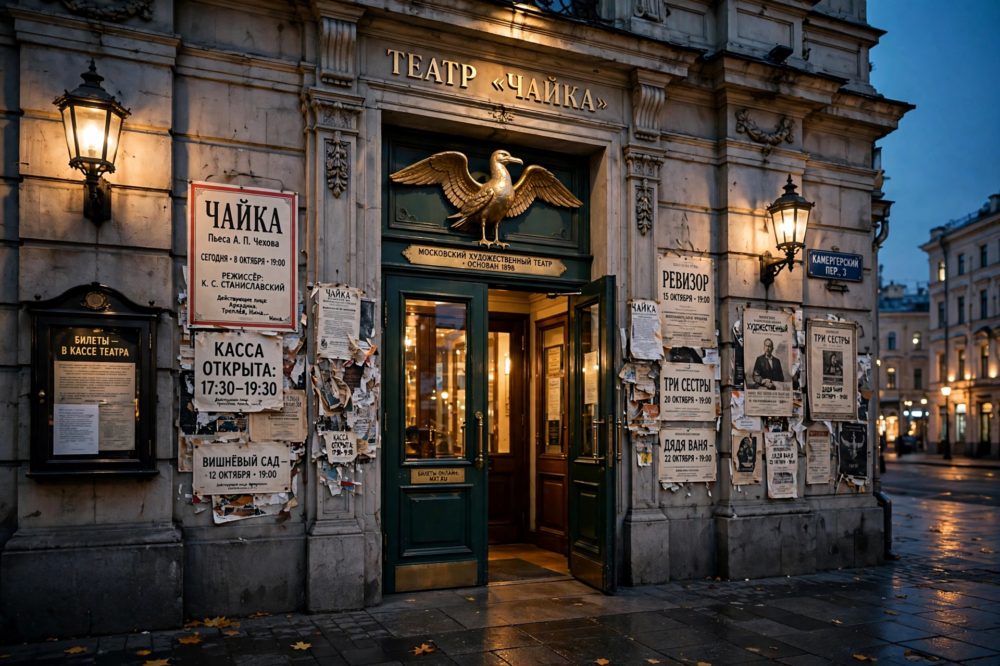

Moscow Art Theatre
| Moscow Art Theatre | |
| Founded | 1898, Moscow, Russian Empire |
|---|---|
| Founders | Konstantin Stanislavski and Vladimir Nemirovich-Danchenko |
| Emblem | The seagull (from Chekhov's The Seagull) |
The Moscow Art Theatre (Russian: Московский Художественный театр) is a theatre company in Moscow founded in 1898 by Konstantin Stanislavski and Vladimir Nemirovich-Danchenko. It revolutionized modern theatre through its ensemble acting, psychological realism, and the world-premiere productions of Anton Chekhov's major plays, and it was the laboratory in which Stanislavski developed his famous "System" of actor training.

Founding and Chekhov
Stanislavski and Nemirovich-Danchenko famously planned their company over an eighteen-hour meeting at the Slavonic Bazaar restaurant in 1897, resolving to abolish the star system, the stock mannerisms of nineteenth-century acting, and the tyranny of the box office. The theatre opened in October 1898; its breakthrough came that December with Chekhov's The Seagull, which had failed in St. Petersburg but triumphed in Moscow — the seagull became, and remains, the theatre's emblem. Landmark productions followed: Uncle Vanya (1899), Three Sisters (1901), and The Cherry Orchard (1904), as well as Gorky's The Lower Depths (1902).
The System and world influence
In rehearsals Stanislavski developed the techniques — given circumstances, emotional memory, objectives, the "magic if" — codified in his books An Actor Prepares and companion volumes. MAT tours to Europe (1906) and America (1922–24) electrified world theatre; former members Richard Boleslawski and Maria Ouspenskaya carried the System to New York, where it fed into the Group Theatre and the Method acting of the Actors Studio. Studios attached to the MAT trained successive generations of Russian actors and directors.
Soviet era and after
After the 1917 Revolution the theatre, protected by Lenin's and Gorky's favor, became the flagship of Soviet drama, renamed for Gorky in 1932; critics debated whether official socialist realism stifled its experimental spirit. The company later split into two troupes in 1987 (the Chekhov Moscow Art Theatre and the Gorky Moscow Art Theatre). Under artistic directors including Oleg Efremov and Oleg Tabakov, the Chekhov MAT remained one of Russia's leading stages.